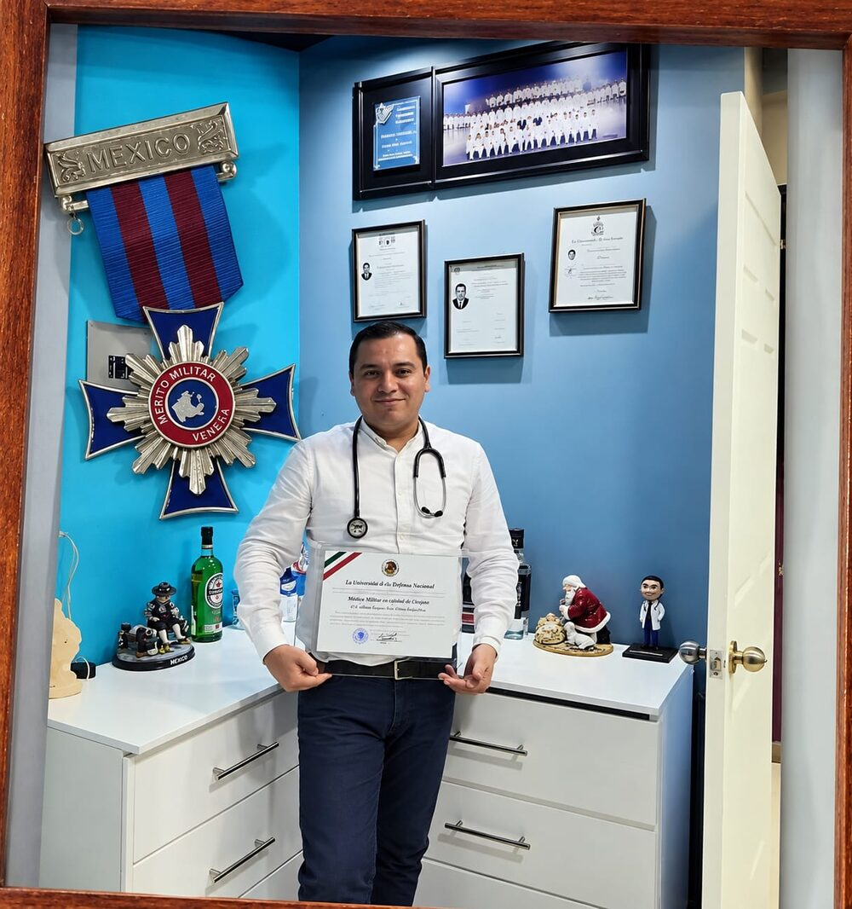
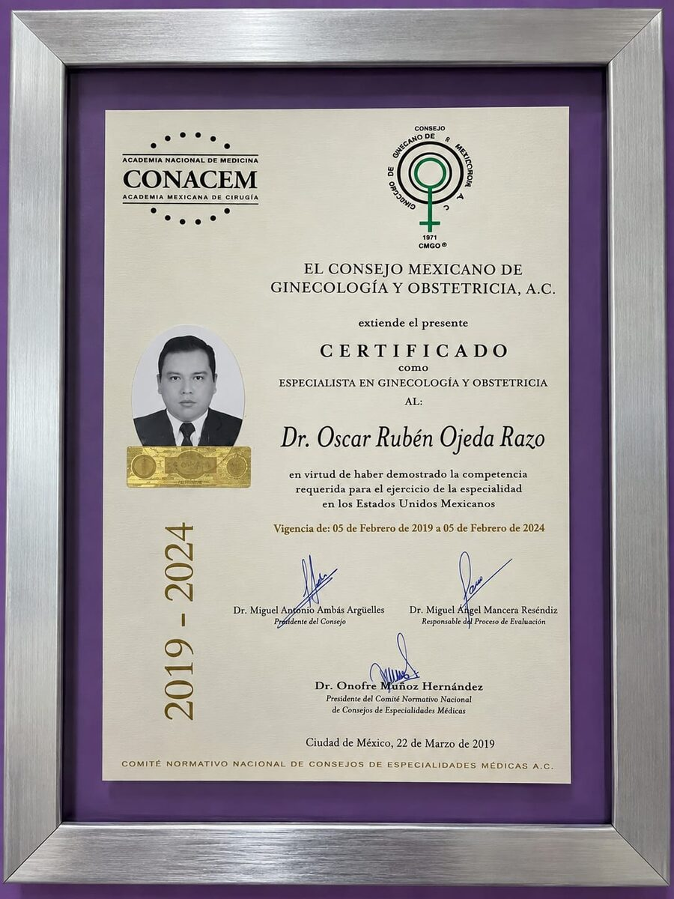
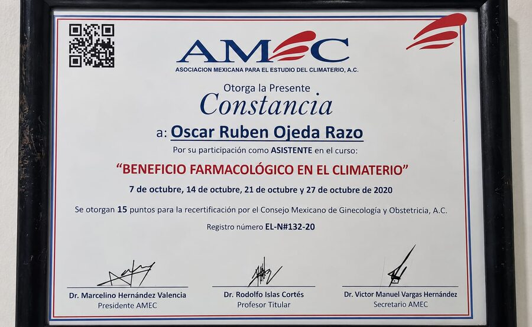
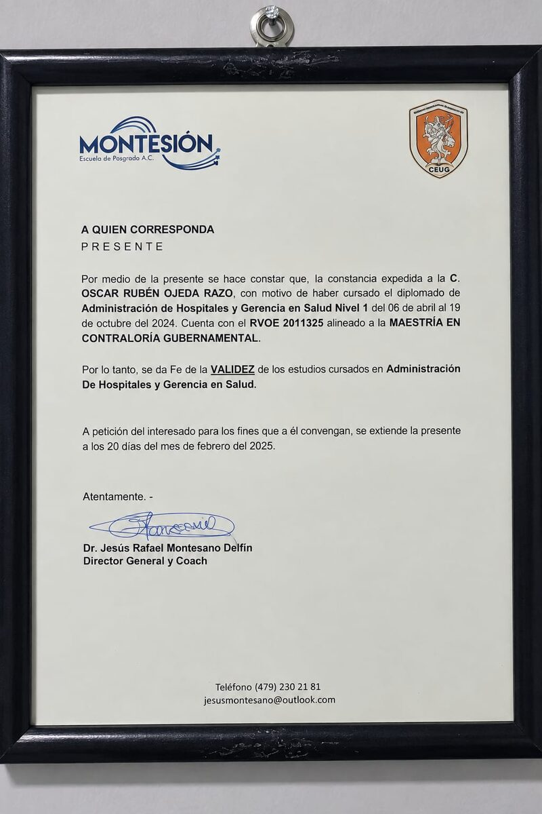
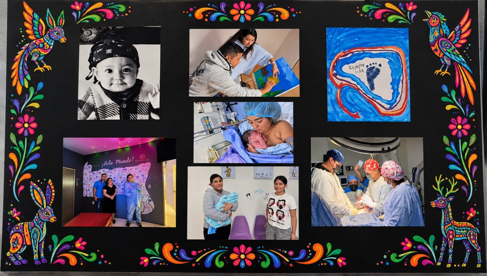
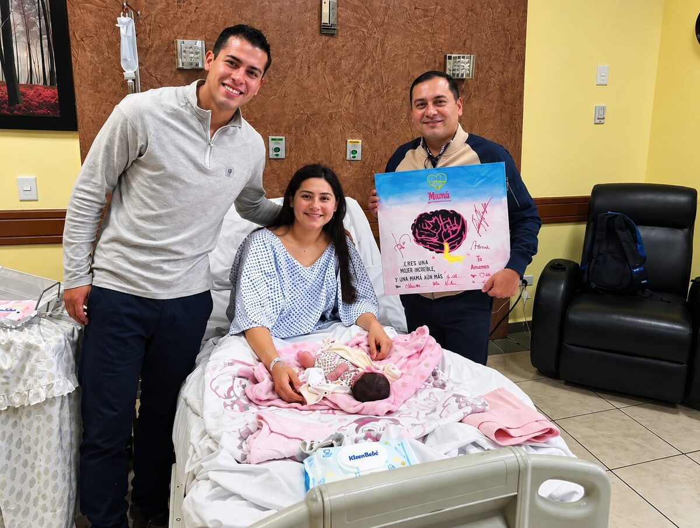
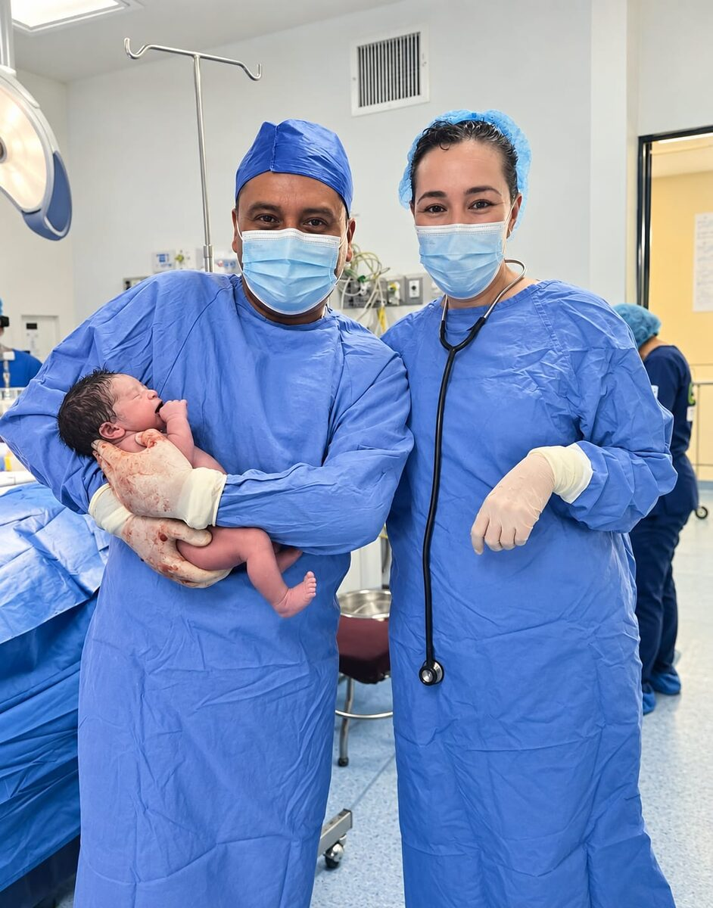
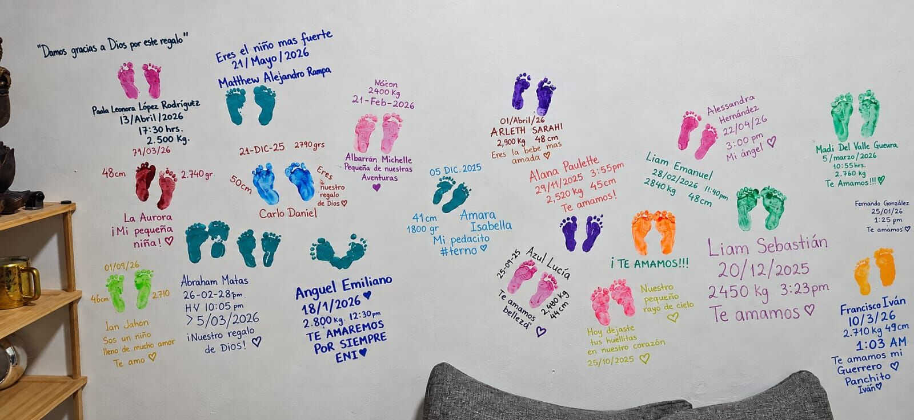
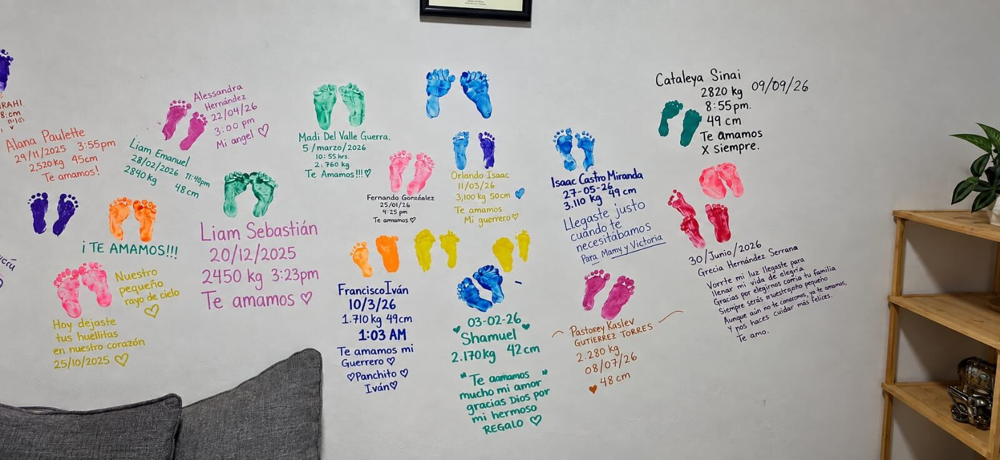
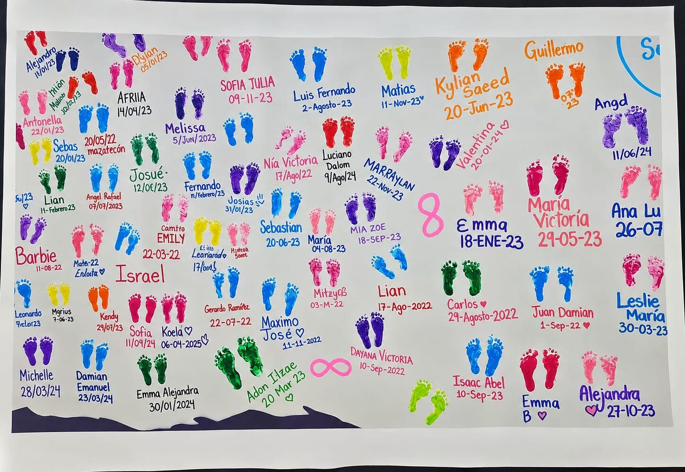

El Dr. Oscar Ojeda Razo ofrece atención especializada en salud de la mujer, embarazo y control ginecológico, con un enfoque cercano y humano en cada consulta.

Médico especialista certificado en Ginecología y Obstetricia por el Consejo Mexicano de Ginecología y Obstetricia, A.C., con formación como Médico Militar Cirujano y estudios en Administración de Hospitales y Gerencia en Salud. Su formación continua incluye actualización constante en temas de salud hormonal y climaterio, siempre con el objetivo de ofrecer una atención integral y actualizada a sus pacientes.



Me gustan los barcos por lo que representan: el timón, porque tú decides el rumbo que quieres tomar en la vida; y el ancla, porque a veces hay que detenerse por un motivo importante — no siempre hay que seguir de largo, a veces hay que parar a respirar.
Cuando no está en el consultorio, disfruta salir en moto — una forma de despejar la mente y disfrutar el camino con la misma pasión que pone en su trabajo.
Es admirador de la cultura hindú, en especial de Ganesha, la deidad que remueve obstáculos y representa nuevos comienzos — un símbolo que conecta muy bien con acompañar a sus pacientes en el camino hacia la maternidad.
"No soy un hombre creativo, honesto, valiente" — una prenda que refleja su lado más personal, más allá del consultorio.



En el consultorio, cada bebé que llega deja su huella — una pared que crece con cada nuevo nacimiento y cada historia de amor.



Agenda tu cita o resuelve dudas por cualquiera de estos medios.
Este número es únicamente para emergencias reales, por ejemplo: sangrado abundante en el embarazo, dolor intenso repentino, disminución o ausencia de movimientos del bebé, o cualquier situación donde la vida de la madre o del bebé pueda estar en riesgo. Para dudas generales o para agendar una cita, usa el teléfono o correo de arriba.